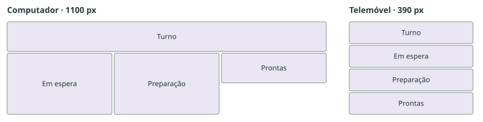

Medidas desta ficha
- Medidas a usar
- 16 px entre os blocos do painel; 8 px entre pedidos e 8 px de espaço interior em cada pedido. O turno ocupa sempre a largura inteira.
- Quando muda a disposição
- Base: 1 coluna. A partir de 640 px: 2 colunas. A partir de 1000 px: 3 colunas. Os limites estão incluídos.
- Resultado esperado
- 390 px: três estados empilhados. 768 px: dois estados lado a lado e Prontas na fila seguinte. 1100 px: três estados na mesma fila.
Larguras para testar: 390 px, 768 px e 1100 px. São larguras da janela do navegador. Só escreves uma media query se o exercício a pedir.
No CSS: escreve 16px, sem espaço entre o número e a
unidade.
Primeiro passo: Abre style.css no editor e lê a etapa 1.
Quando fizeres uma alteração, guarda o ficheiro e atualiza esta página para veres o que
mudou.
Ver o resultado esperado no computador e no telemóvel
Este esquema mostra as posições, sem escala. Para a largura intermédia, usa os testes no fim.

Área de trabalho · Painel de encomendas
Painel de encomendas
Turno da manhã · Balcão aberto até às 12h30.
Em espera
- #21 Duas tostas de queijo
- #22 Um chá de maçã
Em preparação
- #18 Um galão e uma queijada
- #20 Duas sandes de tomate
Prontas a levantar
- #17 Um café e uma torrada
Etapas e conceitos desta ficha
Já conheces: Colunas iguais com repeat, colocação automática por ordem do HTML e intervalos com gap.
Com apoio nesta ficha: grid-area aceita quatro limites: fila inicial / coluna inicial / fila final / coluna final. Nas colunas que definiste, -1 indica o último limite.
- Empilha os blocos
- Estende o turno de uma ponta à outra
- Distribui os estados por duas colunas
- Coloca os três estados lado a lado
- Faz avançar o pedido #23
Encontras as instruções de cada etapa em style.css.
Quando é que está pronto?
Usa o modo responsivo do navegador. Experimenta 390 px (telemóvel), 768 px (intermédio) e 1100 px (computador).
Assinala os testes que passaram. As marcas desaparecem quando atualizas a página; guarda o
resultado em registo.md.
Desafio opcional
Testa como o alinhamento vertical muda a apresentação: faz os três estados parecerem painéis de igual altura no formato largo.